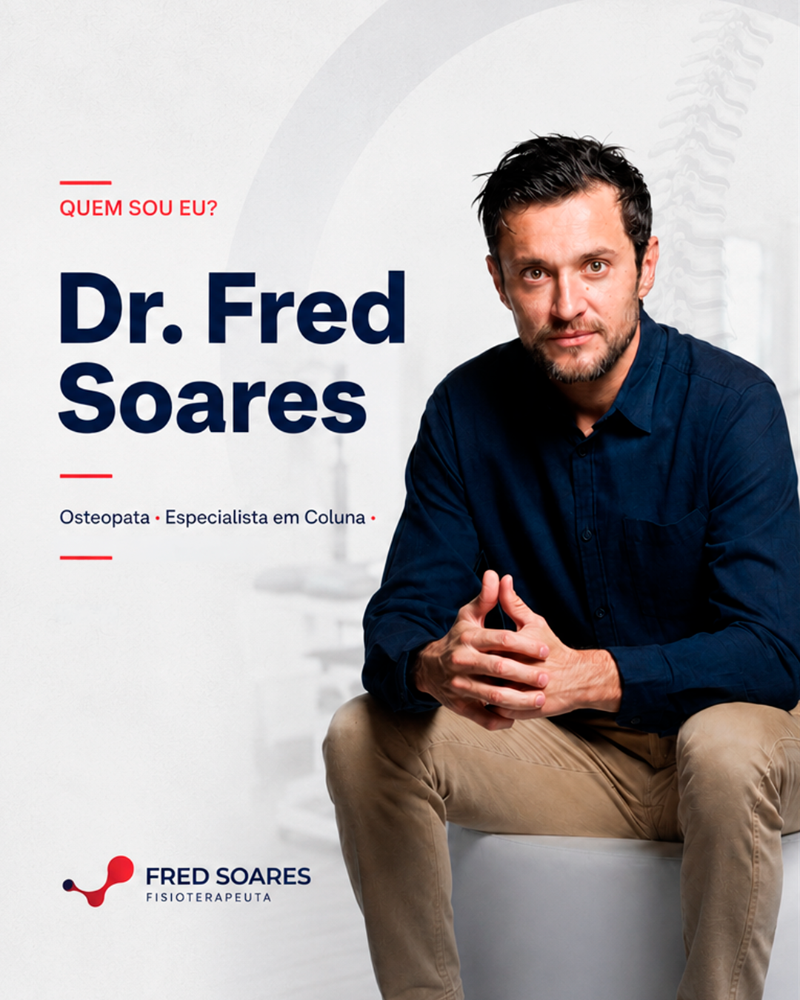
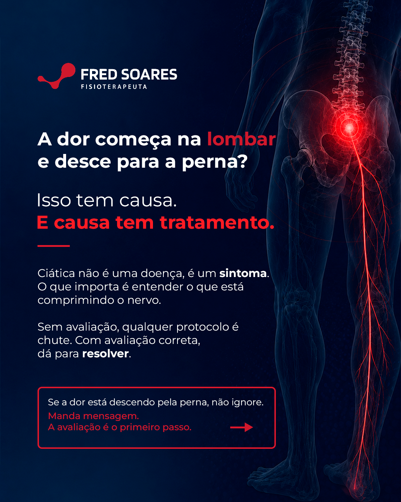
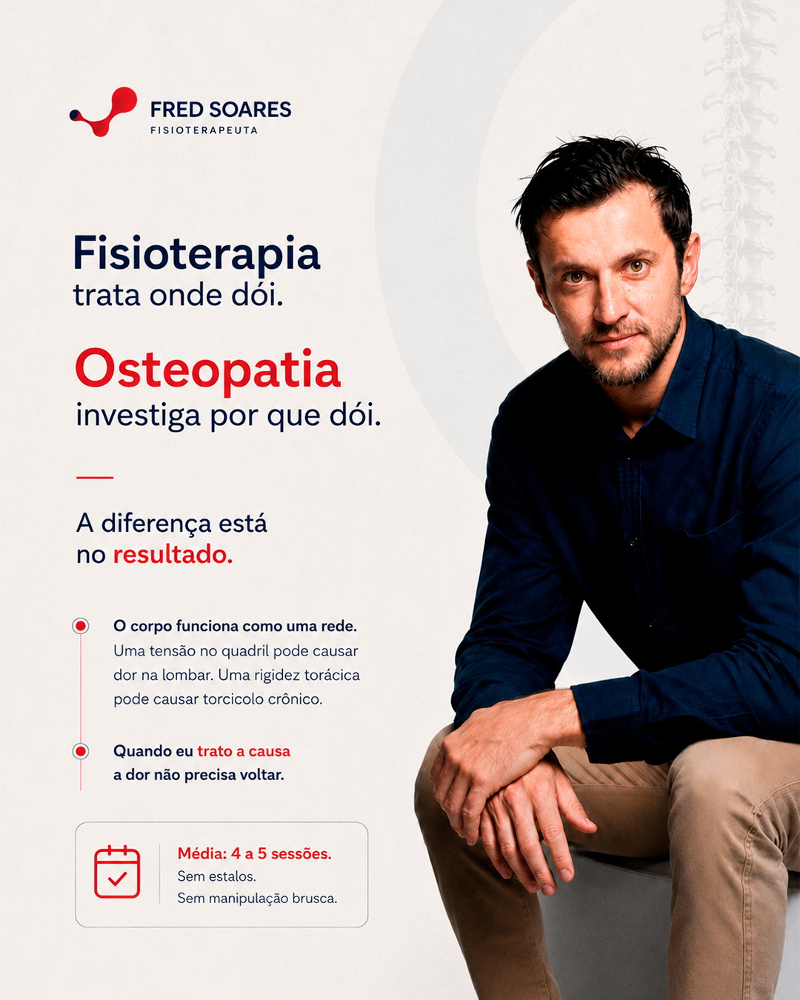
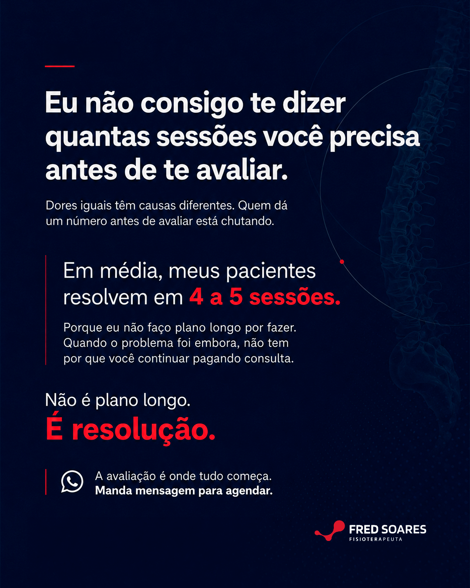
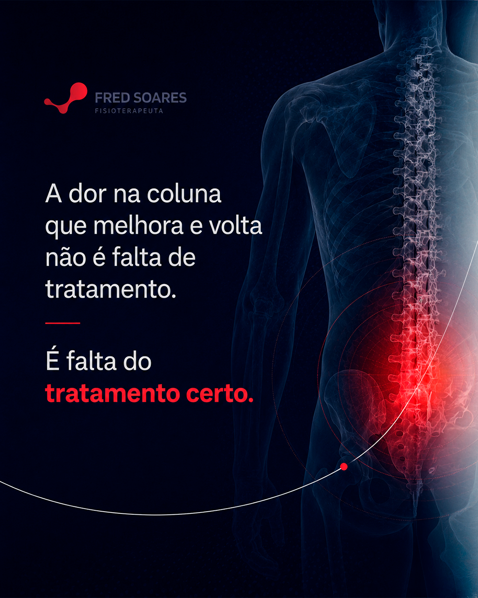
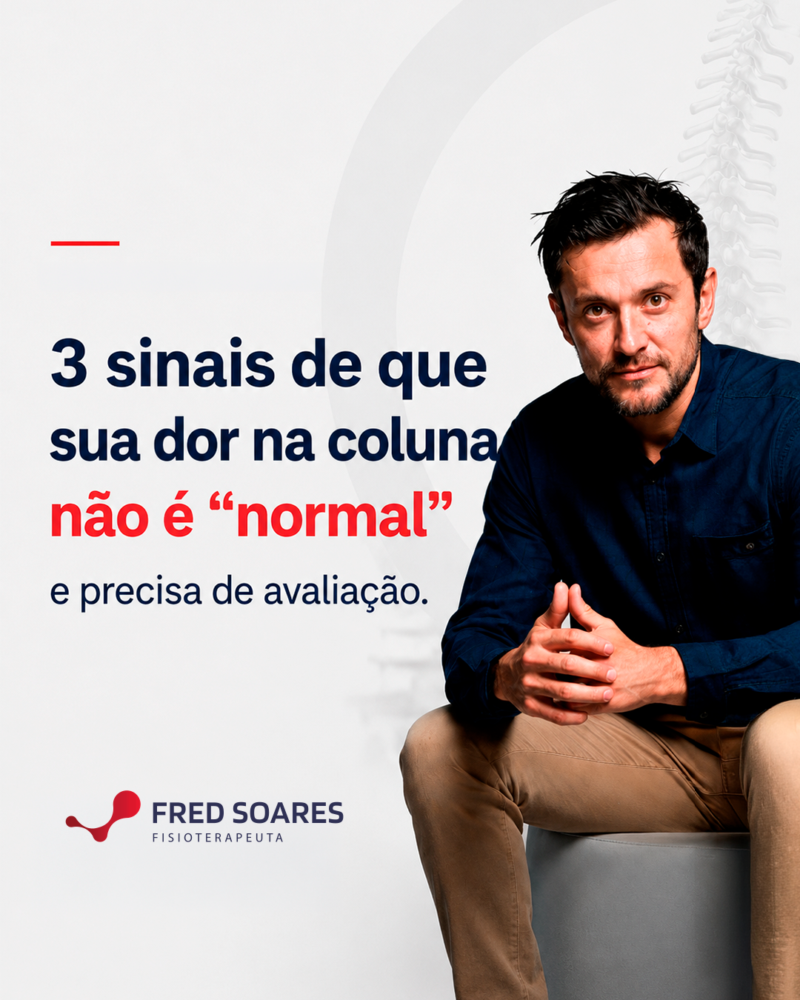
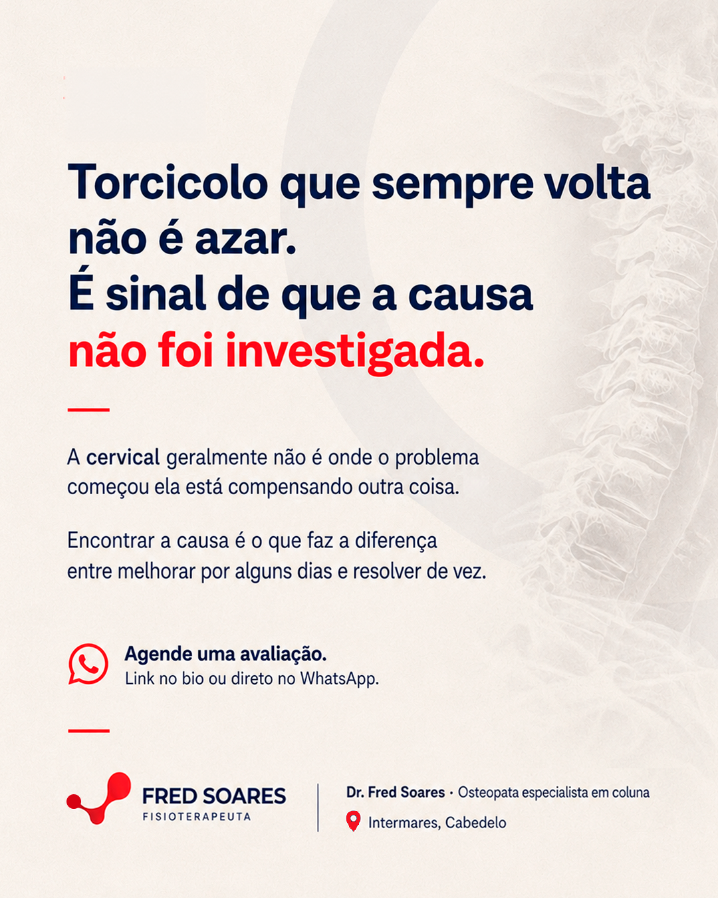
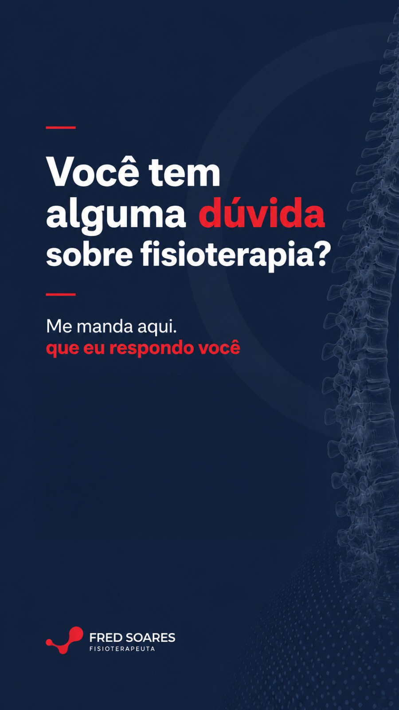
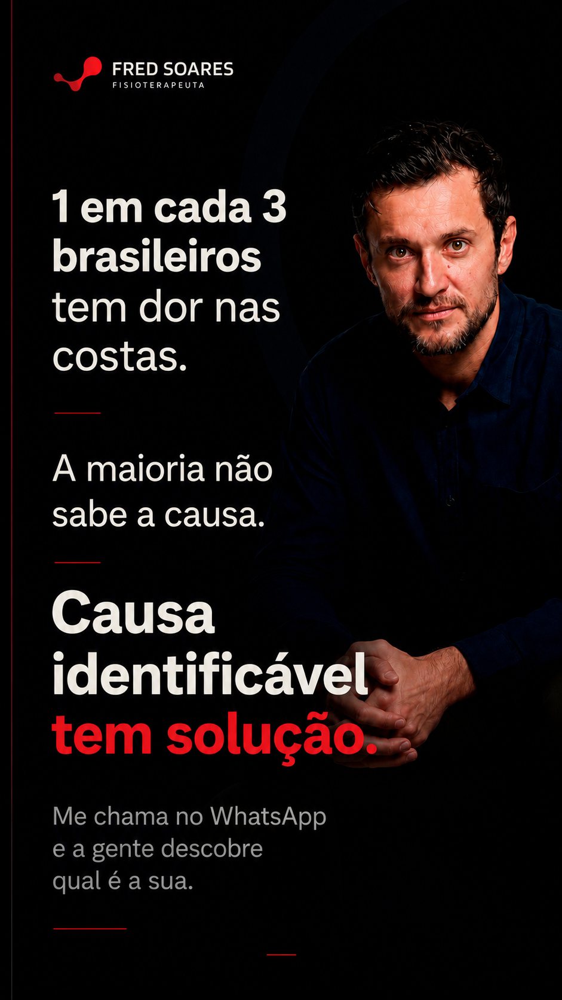

Calendário Editorial · Instagram
Mês 1
Dr. Fred
Soares
Osteopata · Especialista em coluna
Intermares, Cabedelo
Apresentação por Arrive In Digital

Osteopata · Especialista em coluna
Intermares, Cabedelo
Apresentação por Arrive In Digital








Grade 3×3 · 10 publicações em ordem de postagem. Clique em qualquer imagem para ampliar.
Uma única promessa, repetida de ângulos diferentes:
Promessa central
"trata a causa, não o sintoma."
Filtre por formato. Clique em "Ver brief" para ver frase, legenda e instruções de design.
| Tempo | Bloco | Fala |
|---|---|---|
| 0–3s | Gancho | Você sabe o que acontece na primeira consulta comigo? Não é o que a maioria espera. |
| 3–14s | Contexto | Muita gente chega com medo de não saber o que vai encontrar. Chega, diz onde dói — e aí o que vem? |
| 14–32s | Processo | A primeira coisa que faço é te ouvir. De verdade. Quero entender como é o seu dia a dia, o que você faz, como você dorme, o que mudou quando a dor apareceu. Porque a causa da dor raramente está só onde você sente. |
| 32–46s | Avaliação | Depois vem a avaliação completa — postura, mobilidade, tensão muscular. E na maioria dos casos, a gente já inicia o tratamento na mesma consulta. |
| 46–55s | Resultado | Na saída, você sai com um plano. O que encontrei, o que vou fazer — e quantas sessões vai precisar. Sem promessa vaga. Sem 'volta semana que vem'. |
| 55–62s | CTA | Se você quer entender a causa da sua dor — manda uma mensagem. A avaliação é o primeiro passo. Estou em Intermares. |
Carrossel
5 slides
| # | Slide | Copy |
|---|---|---|
| 1 | Capa | Você evita tratar a coluna por medo de estalo? Entendo. E posso explicar por que isso não vai acontecer aqui. |
| 2 | Diferença | Osteopatia ≠ Quiropraxia. A quiropraxia usa manipulação de alta velocidade — daí vem o estalo. A osteopatia usa técnicas suaves de mobilização. Sem impacto. Sem trauma. Sem estalos. |
| 3 | Prova | Funciona sem estalo? Funciona. O estalo não é o tratamento — é efeito de uma técnica específica. Minha abordagem chega no mesmo resultado. Funciona para qualquer perfil. |
| 4 | Idosos | Para idosos, especialmente. Tenho pacientes com mais de 70 anos que se tratam regularmente comigo. A avaliação vem primeiro — só depois defino a técnica adequada. |
| 5 | CTA | Dr. Fred Soares · Osteopata especialista em coluna · Instituto de Madrid + Mestrado USP · Intermares, Cabedelo. |
| Tempo | Bloco | Fala |
|---|---|---|
| 0–4s | Gancho | Se alguém já te disse que sua dor na coluna é da idade e você vai ter que conviver — eu preciso te contar uma coisa. |
| 4–18s | Validação | Eu entendo de onde vem essa conclusão. O médico pede raio-x. Aparece desgaste, artrose. 'É natural para a sua idade.' E você vai embora sem resposta real. |
| 18–38s | Reframe | Mas desgaste na coluna e dor na coluna são coisas diferentes. A maioria dos meus pacientes acima dos 60 que chegam com 'dor da idade' tem tensão muscular acumulada, rigidez articular, compensações que o corpo foi criando ao longo de anos. Isso não é irreversível. Tem tratamento. |
| 38–58s | Prova | Já atendi pacientes com mais de 70 anos que não conseguiam subir uma escada sem dor, que tinham parado de caminhar. Em poucas sessões — com técnica suave, sem estalos — voltaram à rotina. |
| 58–70s | CTA | Se você está nessa situação — ou conhece alguém assim — me chama. Estou aqui em Intermares, perto de você. |
| # | Slide | Copy |
|---|---|---|
| 1 | Capa | 3 sinais de que sua dor na coluna não é 'normal' e precisa de avaliação. |
| 2 | Sinal 1 | A dor sempre volta. Você melhora com repouso ou remédio. Depois de alguns dias voltou. Isso não é azar — a causa nunca foi investigada. |
| 3 | Sinal 2 | A dor vai além do ponto de origem. Começa na lombar e desce para a perna, ou começa no pescoço e vai para o ombro. Quando a dor irradia, pode estar envolvendo nervo. |
| 4 | Sinal 3 | Você começou a evitar movimentos. Parou de se abaixar, de virar o pescoço. O corpo está se protegendo — mas piora a mobilidade a longo prazo. |
| 5 | Resolução | Nenhum desses sinais é coisa da idade. Todos têm causa — e causa tem tratamento. A maioria dos meus pacientes resolve em 4 a 5 sessões. |
| 6 | CTA | Dr. Fred Soares · Osteopata especialista em coluna · Instituto de Madrid + Mestrado USP · Intermares. Salva esse post e manda mensagem se se identificou. |
| Tempo | Bloco | Fala |
|---|---|---|
| 0–3s | Gancho | Ele não conseguia calçar os próprios sapatos. |
| 3–10s | Contexto | Parece uma coisa simples. Mas quem já teve uma crise forte de coluna sabe: quando a dor trava, até o básico fica difícil. |
| 10–22s | História | Levantar da cama. Sentar. Entrar no carro. Abaixar. Calçar um sapato. Foi assim que o Marcelo chegou. Era a primeira crise de coluna dele. Além da dor, tinha a insegurança: o que está acontecendo? Vai passar? O que eu posso ou não fazer? |
| 22–38s | Diferencial | E é justamente por isso que o atendimento não pode ser automático. Antes de qualquer técnica, é preciso ouvir, avaliar e explicar. No caso dele, o tratamento ajudou a recuperar movimento, reduzir a limitação e devolver confiança para a rotina. |
| 38–50s | Mensagem | Mas o ponto principal desse caso não é só a melhora. É o que acontece quando o paciente entende o que está acontecendo com o próprio corpo e se sente seguro durante o processo. |
| 50–57s | Fechamento | Dor na coluna não afeta só a coluna. Afeta sua autonomia. |
| 57–62s | CTA | Se uma dor está limitando movimentos simples da sua rotina, agende uma avaliação. |

Story
StoryDr. Fred Soares · Osteopata especialista em coluna · Intermares, Cabedelo
Calendário editorial produzido por Arrive In Digital